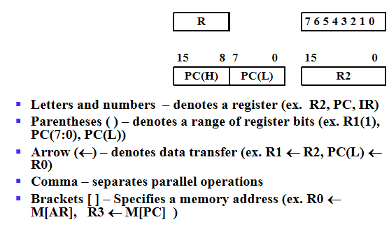
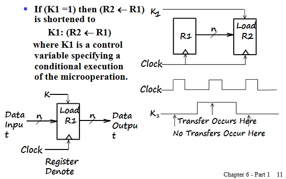
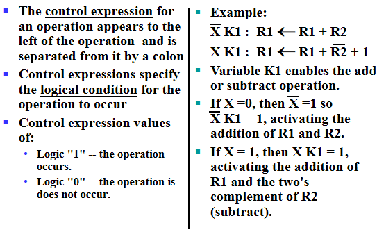
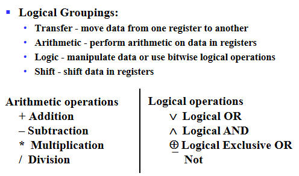
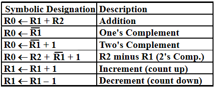
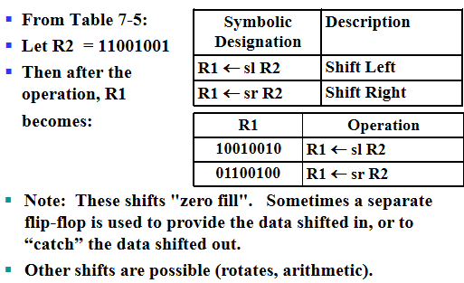
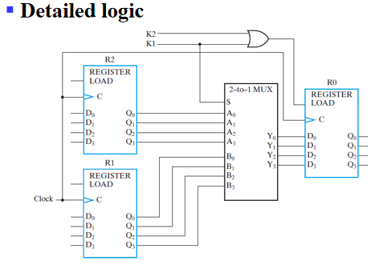

Registers and Register Transfers¶
约 957 个字 预计阅读时间 3 分钟
Registers, Microoperations and Implementations¶
Registers and load enable¶
寄存器是一系列二进制存储单元的集合。我们可以把时序电路中的存储元件抽象成寄存器。
但是在计算机设计中，由于位数很多，因此我们使用之前时序电路的思想，画状态表状态图，是不现实的。因此有以下两种设计思路：
- 将整个计算机电路分成两个部分，一个是存储元件，一个是组合电路部分。组合电路去完成存储元件输出与次态和当前输入的关系。
- 设计出单位电路，组合成多位电路。
寄存器最基本的功能就是保存计算结果。因此寄存器起码需要有两种状态：存储，使能加载新数据。
对于存储，寄存器需要做到保存多个时钟周期的数据。
由于我们时序电路中最常用的是D触发器，因此我们考虑一下能否用D触发器来实现寄存器的功能？
D触发器在每个时钟周期都会根据输入更新数据，因此不符合存储多个时钟周期数据的需求。因此我们需要修改D触发器的电路。
有几种思路：
- 把时钟block掉。
- 使用SR或者JK触发器这些具有保持功能的触发器。(本质上是将触发器的输出返回到输入上)
Load信号：当Load为1时代表寄存器需要接收新数据，为0代表保存。有时候会用\(\overline{Load}\)表示。

对于电路的搭建，很显然可以设置新的clock=\(clock+\overline{Load}\)。
但是对于这个比较简单的电路(在时钟上加一个或门)，或门产生了时钟延迟，这样就出现了时钟信号不同步的情况，对于同步时序电路，这是我们不希望出现的。
所以更实用的方法是使用选择器，将当前寄存器输出返回到输入端，通过Load信号选择本位输入(更新)或是当前寄存器的值(保持)。

Register Transfer Operations¶
寄存器接收新数据本质山就是寄存器传输，把某个寄存器的值经过计算后传输给另一个寄存器。
几个基本的部分： - 多个寄存器(元寄存器，目的寄存器) - 传输方向+计算(operations：load,count,shift,add,or,etc.称作microoperations), 通常用组合逻辑电路实现 - 控制条件：什么时候要做啥运算，传给谁。
Register Notation¶

其中\(M[AR]\)中[]代表寻址。就像C语言中的*。其中PC(Program Counter)，是当前执行指令的内存位置。
Conditional Transfer¶

需要注意的点： - 对于\(R_2\)寄存器，输入端是一直有信号的(数据是一直准备好的)，但是没有\(Load\)信号是不会接受的。Load信号控制的是是否接受，而不是是否传递。
- 并不是Load一变为1，R2就开始接收新数据的。R2内部本质是个触发器，接受新数据也要等到时钟的上升沿。
Control Expressions¶

Microoperations - arithmetic,logic,and shift¶

有一个注意的点，在冒号左边的加号代表逻辑或;在冒号右边的加号代表算术加。
Arithmetic Microoperations¶

Logical Microoperations¶

Shift Microoperations¶

Register Transfer Structures¶
Multiplexer-Based Transfers¶
当\(K_1\)满足时，用\(R_1\)更新\(R_0\) 当\(K_2\overline{K_1}\)满足时，用\(R_2\)更新。


对于更一般的使用多路复用器进行寄存器传输的架构如下图所示：

其中选择控制端做了个编码器，\(n\)位控制信号实现\(m\)位选择控制端。
Register Cell Design¶
做单位的设计，最后进行拼接(注意考虑边界条件)。
Specifications